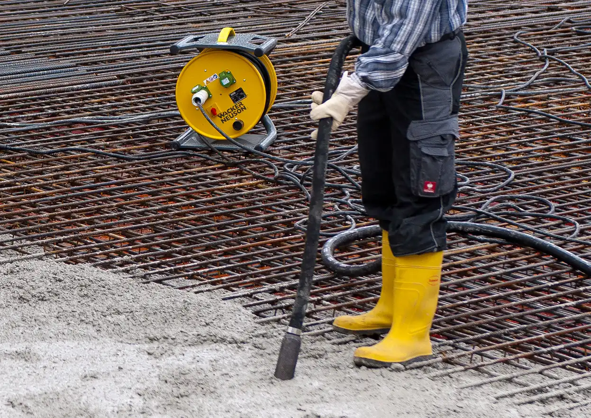
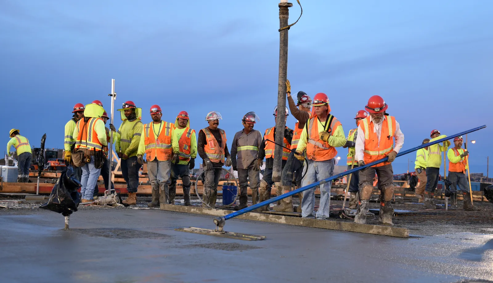

Топпинг или полимер
Чем бетон с топпингом отличается от полимерного покрытия, когда топпинг не применяют и как выбрать пол под нагрузку.
Читать →
Классы нагрузки
Что зафиксировать до сметы: техника, колёса, стеллажи, химия, уборка и температура. Чек-лист подбора пола.
Читать →
Ошибки при заливке
Слабое основание, вода в миксере, поздние швы, неверный топпинг и отсутствие ухода. Какие вопросы задать подрядчику.
Читать →
Как составить ТЗ
Чтобы сметы подрядчиков были сравнимы, в ТЗ нужны нагрузки, основание, швы и состав работ — не одна «цена за метр».
Читать →
Приёмка пола
Что проверить рейкой, фонарём и молотком: документы, ровность, поверхность, трещины, швы и зоны нагрузки.
Читать →
Обеспыливание и пропитка
Чем пропитка отличается от топпинга и полимера, когда её применяют и что учесть на складе.
Читать →Полы для склада
Как нагрузка колёс, проездов и стеллажей влияет на выбор пола: топпинг, полимер или сочетание зон.
Читать →
Сроки и этапы
От подготовки основания до топпинга или полимера. Когда по инструкции SuperTOP допустима пешая нагрузка.
Читать →